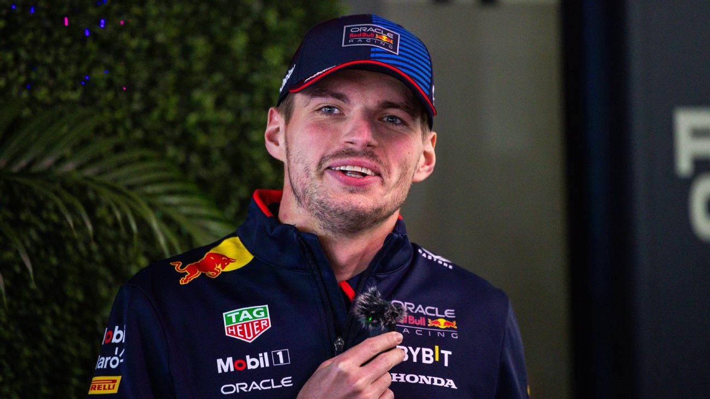

F1Motion
F1Motion¿Qué necesitaría Max Verstappen para ser campeón de la temporada 2025?
publicado por Tiago Monaco en Octubre de 2025

Como si se tratara de una carrera de caballos, Max Verstappen se convirtió en una amenaza para ganar el Mundial 2025 de arremetida. Dos carreras atrás, el neerlandés navegaba a 104 puntos del líder, Oscar Piastri, y su aspiración de enhebrar el quinto título en fila parecía utópica. Pero llegaron dos pistas de baja carga aerodinámica, esas que tan bien le caen a Red Bull y tanto le gustan al neerlandés, el estreno de un nuevo fondo plano en el RB21 y clavó dos triunfos en fila: Italia y Azerbaiyán. Así, la brecha con el australiano de McLaren se achicó a 69, con siete fines de semana por delante, con el GP de Singapur en el horizonte cercano. En el día de atención a la prensa, previo al comienzo de la actividad de la carrera en el urbano de Marina Bay (18ª cita), varios pilotos fueron consultados sobre qué porcentajes de posibilidades le daban a la candidatura a campeón de Verstappen. “Hay una posibilidad, más que cero”, dijo Lando Norris, el segundo de la tabla, a 25 unidades de su compañero en el equipo de Woking. “100%”, dijo George Russell, antes de soltar una carcajada. Norris, a su lado, le respondió: “Eres un buen amigo”. Esteban Ocon, quien completó el terceto de pilotos en la sala de conferencias, señaló: “Todos conocemos a Max y sabemos lo peligroso que es cuando hay algo que agarrar. Así que sí, hay muchas posibilidades de que, si tiene un coche competitivo hasta final de año, pueda recuperarse”. La pregunta, claro, llegó al protagonista. Fiel a su estilo, Verstappen dejó su sello en la respuesta: “50%”, disparó. Cuando le dijeron que era una chance muy alta la que se estaba atribuyendo, remató: “Y, hay dos opciones: lo gano o no lo gano, 50%”. Verstappen y Red Bull tendrán una dura prueba este fin de semana en Singapur, un trazado de muchísima carga aerodinámica, con alerones al estilo Mónaco, situación en la que el RB21 sufre. Para reafirmar sus credenciales de candidato, deberá sacar un buen resultado en Marina Bay, la única pista de todo el calendario actual del Mundial en la que no ganó. “Los dos circuitos anteriores eran de baja carga aerodinámica, pero también de bajo desgaste de neumático Este circuito es mucho más pesado para los neumáticos y, por supuesto, tiene mucha carga aerodinámica. No creo que nuestro coche dé lo mejor de sí con una configuración de alta carga aerodinámica, ya que siempre somos bastante eficientes en circuitos de baja carga. El año pasado, aunque fuimos segundos aquí, estábamos a kilómetros de McLaren. Esperemos que esta vez podamos ser un poco más competitivos, pero siendo sincero, realmente no lo sé. Así que tenemos que esperar y ver", dijo el campeón.

El neerlandés lo tiene claro: o lo gana, o no.
Volver atras